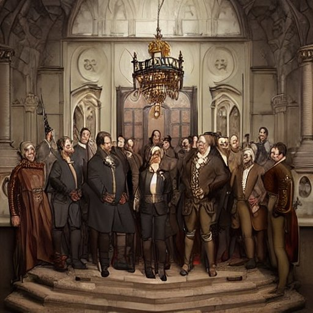

O Poder e a Justiça na Idade Média: Uma Aventura de Escolhas

Era uma vez, numa terra medieval distante, um grupo de políticos que lutavam pelo poder e controle do reino. Entre eles, havia um senhor feudal chamado Lord Grey, conhecido por sua astúcia e força militar. O outro era o Bispo Benedict, cujo poder estava baseado em sua influência religiosa e habilidades diplomáticas.
Numa manhã de verão, Lord Grey convocou seus seguidores para uma reunião de estratégia. Ele propôs um ataque surpresa ao castelo do Bispo Benedict, na tentativa de tomá-lo como prisioneiro e assim acabar com seu poder. Seus seguidores se dividiram em duas opções: